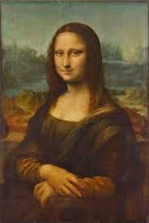

Artes Estéticas o Espaciales Las artes espaciales son las que se constituyen estéticamente en el espacio como pintura, escultura y arquitectura, estas tienen un carácter noble y son prácticos. 
Artes Estéticas o Espaciales
Las artes espaciales son las que se constituyen estéticamente en el espacio como pintura, escultura y arquitectura, estas tienen un carácter noble y son prácticos.